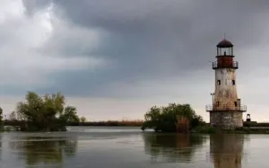
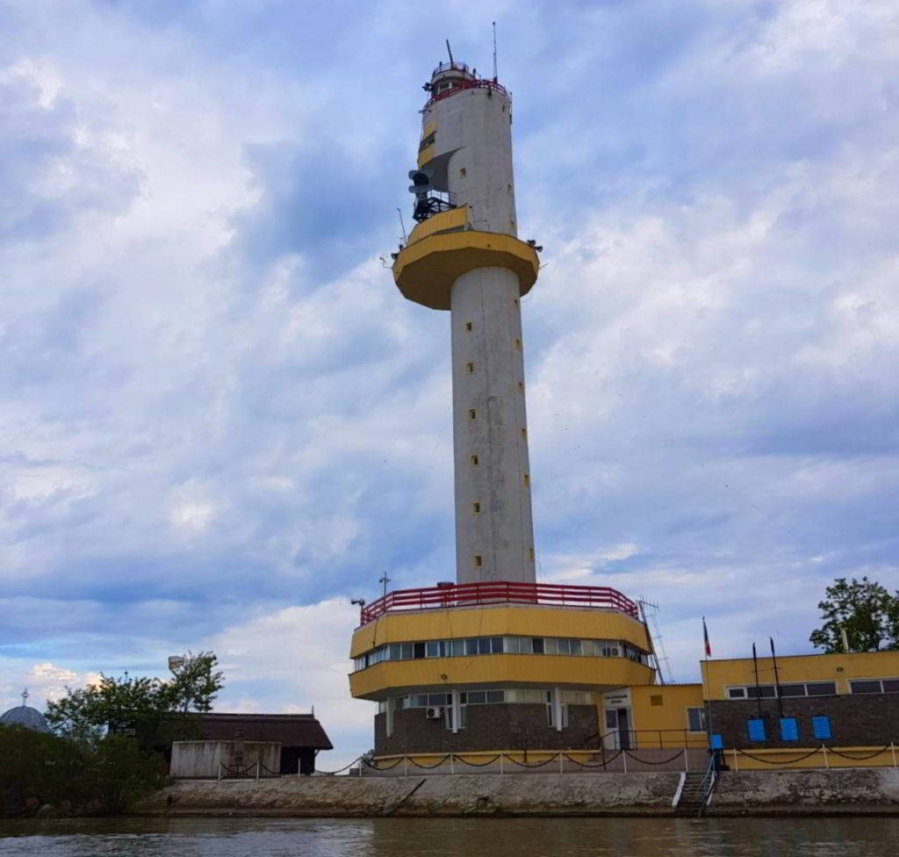

Muzeul Farul Vechi Sulina
Reper intern al orasului farul din Sulina este situat la 2,5 km
distanta de malul actual al Marii Negre.
A fost construit, probabil la inceputul secolului al XIX-lea, pe
malul drept al Dunarii si apartinea Administratiei Generale a
Farurilor din Imperiul Otoman.
La 1 aprilie 1879, Farul din Sulina este predat Comisiunii Europene
a Dunarii, careia ii revenea, din acel moment, sarcina de a-I
administra, intretine si repara. In perioada 1995-1997 constructia a
fost restaurata de Ministerul Culturii si Cultelor. Din anul 2003 a
intrat in administrarea Institutului de Cercetari Eco-Muzeale
Tulcea, fiind amenajat ca muzeu.
Una dintre camere îi este dedicată marelui dirijor GEORGE GEORGESCU,
născut aici.
De jur împrejur, în aceste mari tablouri, sunt cei mai mari oameni
consacrați ai muzicii clasice din lumea întreagă, care au susținut
concerte sub bagheta maestrului George Georgescu, peste tot în lume.
În aceste vitrine avem câteva obiecte personale ce au aparținut
maestrului, iar în fiecare an, la sfârșitul lunii august, în curtea
mică a farului, susținem un mic concert cu invitați de la
filarmonica din București
O legendă locală spune că după o renovare, în anul 1997, cineva a furat
lemnul de pardoseală adus din India. După câţiva ani, şoferul
inginerului care s-a ocupat cu renovarea a povestit că, în drum spre
Constanţa, un cal a apărut din senin şi a sărit pe maşină şi i-a omorât
pe amândoi, pe cei care luaseră lemnul. „Este un blestem al zeilor” cred
localnicii.

Farul vechi de pe malul Dunării
Tot în Sulina există și un far vechi costier, care este monument
istoric. El este situat în aval de oraș, pe malul stâng al Dunării,
aproape de vărsarea fluviului în Marea Neagră. Farul vechi costier a
fost scos din funcțiune în urma lucrărilor de prelungire în mare a
digurilor gurii Canalului Sulina, începute în anul 1922. Pe
exteriorul farului pot fi văzute și acum inscripțiile celor ce au
participat la construcția lui.
Farul funcțional
Farul nou de pe plaja din Sulina – are o lumină cu trei sclipiri,
2,9 secunde fiecare, 3,4 secunde pauza dintre ele și 9,7 secunde
între cicluri. În alfabet Morse înseamnă SL, de la Sulina. El
funcționează din 1987 și a înlocuit Farul Vechi, care a fost
declarat far stins. La un moment dat, Farul Nou nu a mai mers și a
fost repus în funcțiune cel vechi, cu noile coordonate. Două nave au
eșuat însă temporar în zona plajei, deoarece s-au luat după
coordonatele vechi, dar nefiind un incident major, au fost puse pe
linia de plutire. Farul nou are 3 surse de alimentare: are curent
tras pe sub apă până la far, a avut eoliană, panouri fotovoltaice,
Diesel generatoare și cu acetilenă.
